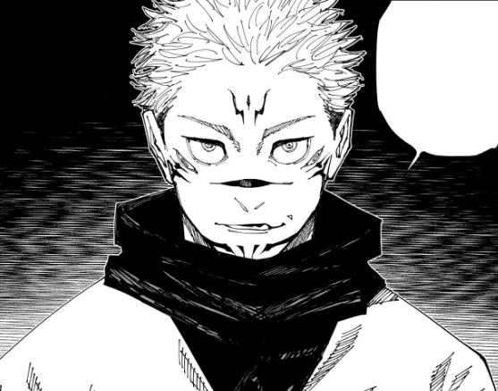

Sukuna — the Problem of Jujutsu Kaisen
Okay so basically:
Sukuna is THAT guy in JJK. Like, not “strong villain” strong — I mean the literal king of curses, the original menace, the one everyone hopes stays OUTSIDE the plot but obviously doesn’t.
He’s the type of guy who wakes up after 1000+ years and immediately acts like he owns the place… because honestly? He kinda does.

Why everyone is scared of him
Bro is ancient.
Like thousand-years-old ancient.
And back then? Everyone teamed up to try to kill him, but the best they could do was cut him into 20 fingers and hope nobody eats them.
Spoiler: Yuji ate one.
So Sukuna comes back like:
“Miss me? 🙂”

Sukuna & Yuji
This is the funniest and scariest part.
Sukuna lives inside Yuji like:
a demon roommate, who never pays rent, insults everyone, takes over your body at the worst possible moment
and acts like he's doing you a favor
Yuji’s like “pls behave,”
and Sukuna’s like “no ❤️”.